REGRESAR A LA PAGINA PRINCIPAL

4.1 Aspectos basicos de la computacion paralela
La computación paralela es una forma de cómputo en la que muchas instrucciones se ejecutan simultáneamente, operando sobre el principio de problemas grandes, a menudo se pueden dividir en unos más pequeños, que luego son resueltos simultáneamente (en paralelo).
Los programas informáticos paralelos son más difíciles de escribir que los secuenciales, porque la concurrencia introduce nuevos tipos de errores de software, siendo las condiciones de carrera los más comunes.
Paralelismo a nivel de bit:Se refiere a aumentar el tamaño de la palabra del procesador para reducir el número de instrucciones que debe ejecutar el procesador en variables cuyos tamaños sean mayores a la longitud de la cadena
Paralelismo a nivel de instrucción:se refiere a la capacidad de los procesadores para reordenar y combinar grupos de instrucciones que luego son ejecutadas en paralelo sin cambiar el resultado del programa.
Paralelismo de datos:se refiere a la capacidad de los procesadores para procesar múltiples datos al mismo tiempo.
Paralelismo de tareas:se refiere a la capacidad de los procesadores para realizar múltiples tareas al mismo tiempo.
Muy grueso: Programas.
Grueso: Subprogramas, tareas.
Fino: Instrucción.
Muy fino: Fases de instrucción.
Single Instruction, Single Data (SISD):Hay un elemento de procesamiento, que tiene acceso a un único programa y a un almacenamiento de datos. En cada paso, el elemento de procesamiento carga una instrucción y la información correspondiente y ejecuta esta instrucción. El resultado es guardado de vuelta en el almacenamiento de datos. Luego SISD es el computador secuencial convencional, de acuerdo al modelo de von Neumann.
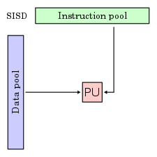
Multiple Instruction, Single Data (MISD):Hay múltiples elementos de procesamiento, en el que cada cual tiene memoria privada del programa, pero se tiene acceso común a una memoria global de información. En cada paso, cada elemento de procesamiento de obtiene la misma información de la memoria y carga una instrucción de la memoria privada del programa. Este modelo es muy restrictivo y no se ha usado en ningún computador de tipo comercial.
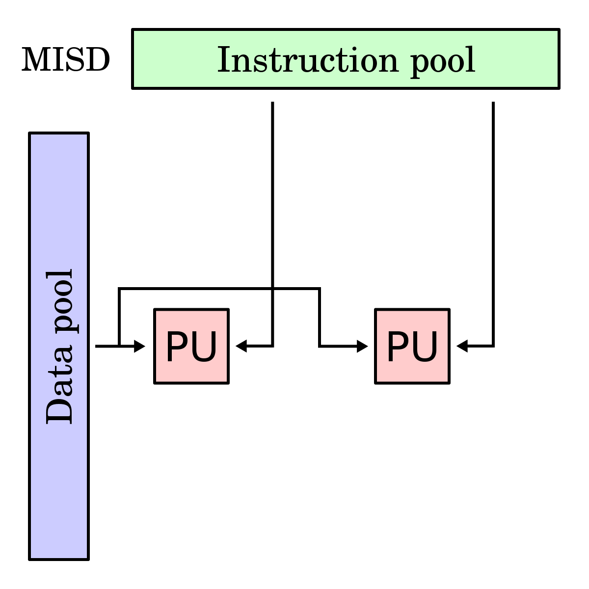
Single Instruction, Multiple Data (SIMD):Hay múltiples elementos de procesamiento, en el que cada cual tiene acceso privado a la memoria de información (compartida o distribuida). Sin embargo, hay una sola memoria de programa, desde la cual una unidad de procesamiento especial obtiene y despacha instrucciones.
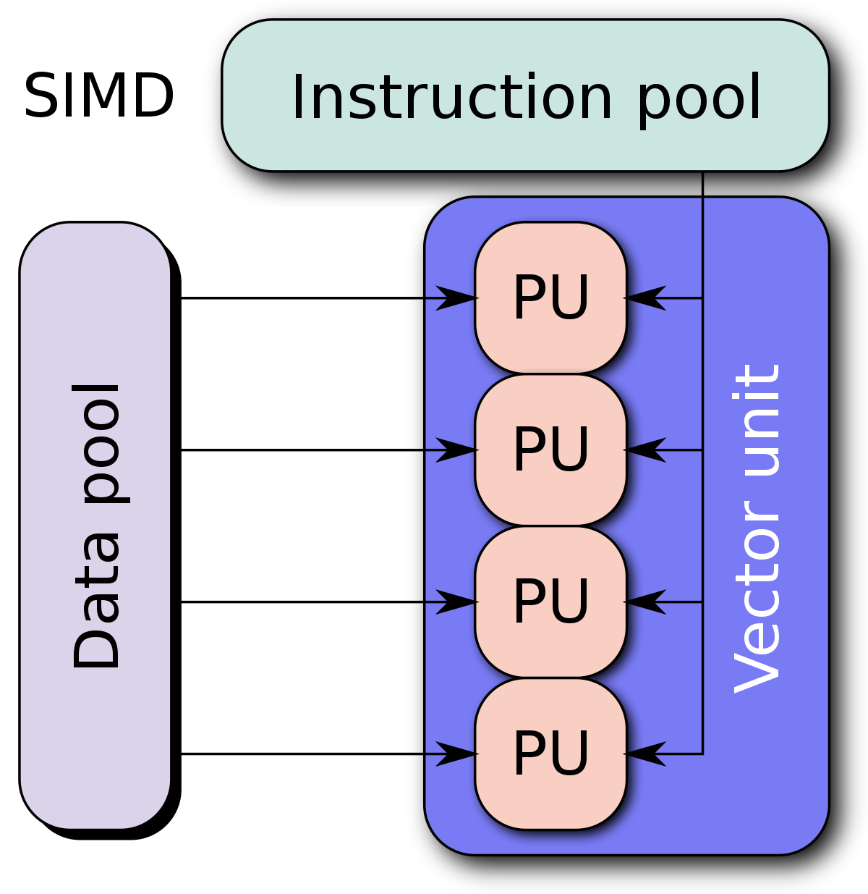
Multiple Instruction, Multiple Data (MIMD):Hay múltiples unidades de procesamiento, en la cual cada una tiene tanto instrucciones como información separada. Cada elemento ejecuta una instrucción distinta en un elemento de información distinto. Los elementos de proceso trabajan asíncronamente. Los clusters son ejemplo son ejemplos del modelo MIMD.
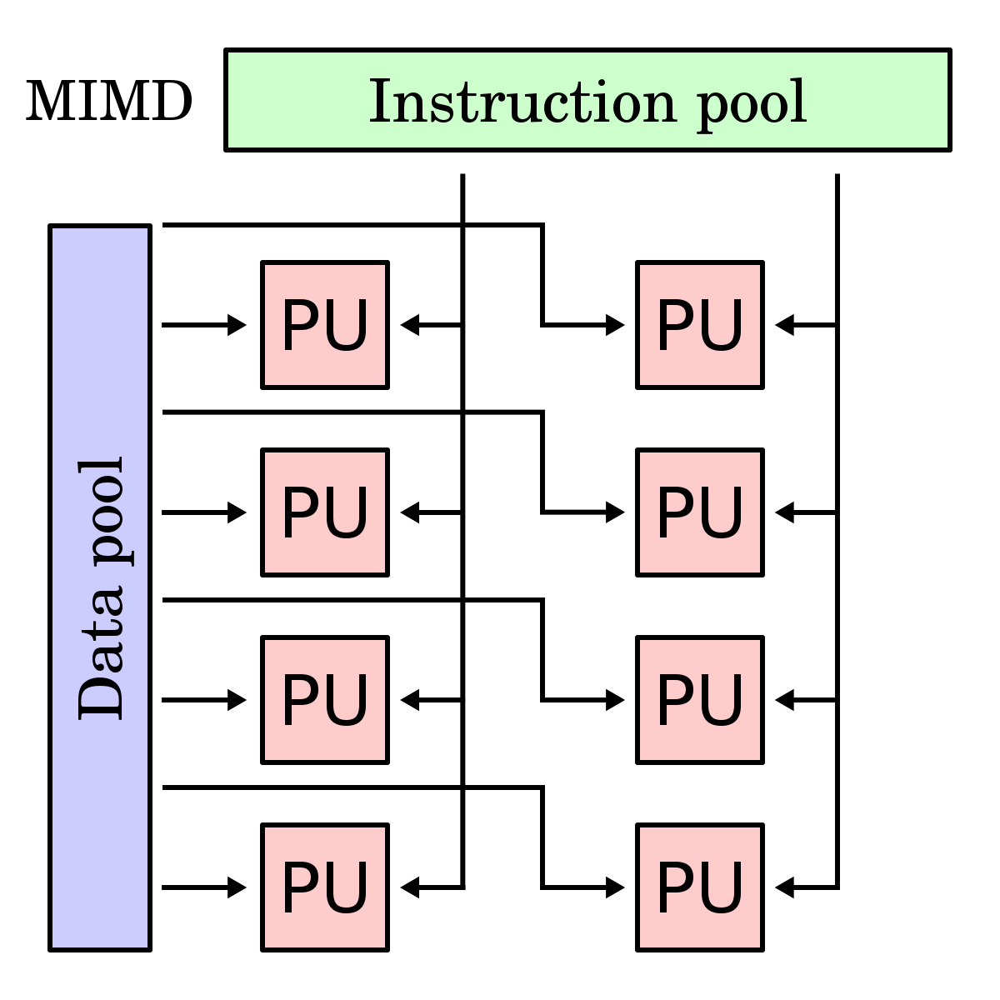
4.2 Tipos de Computacion Paralela
Paralelismo a nivel de bit:Históricamente, los croprocesadores de 4 bits fueron sustituidos por unos de 8 bits, luego de 16 bits y 32 bits, esta tendencia general llegó a su fin con la introducción de procesadores de 64 bits, lo que ha sido un estándaren la computación de propósito general durante la ultima decada
Paralelismo a nivel de instrucción:Los procesadores modernos tienen ''pipeline'' de instrucciones de varias etapas. Cada etapa en el pipeline corresponde a una acción diferente que el procesador realiza en la instrucción correspondiente a la etapa; un procesador con un pipeline de N etapas puede tener
Paralelismo de datos:El paralelismo de datos es el paralelismo inherente en programas con ciclos, que se centra en la distribución de los datos entre los diferentes nodos computacionales que deben tratarse en paralelo. Muchas de las aplicaciones cientificas y de ingenieria muestran paralelismo de datos.
Paralelismo de tareas:Es un paradigma de la programación concurrente que consiste en asignar distintas tareas a cada uno de los procesadores de un sistema de cómputo. En consecuencia, cada procesador efectuará su propia secuencia de operaciones. En su modo más general, el paralelismo de tareas se representa mediante un grafo de tareas, el cual es subdividido en subgrafos que son luego asignados a diferentes procesadores.
4.2.1 Clasificacion
Las computadoras paralelas se pueden clasificar de acuerdo con el nivel en el que el hardware soporta paralelismo. Esta clasificación es análoga a la distancia entre los nodos básicos de cómputo.
Computación multinúcleo:un procesador multinúcleo es un procesador que incluye múltiples unidades de ejecución (núcleos) en el mismo chip
Multiprocesamiento simétrico:un multiprocesador simétrico (SMP) es un sistema computacional con múltiples procesadores idénticos que comparten memoria y se conectan a través de un bus.
Computación en clúster:un clúster es un grupo de ordenadores débilmente acoplados que trabajan en estrecha colaboración, de modo que en algunos aspectos pueden considerarse como un solo equipo.
Procesamiento paralelo masivo:tienden a ser más grandes que los clústeres, con «mucho más» de 100 procesadores.
Computación distribuida:la computación distribuida es la forma más distribuida de la computación paralela. Se hace uso de ordenadores que se comunican a través de la Internet para trabajar en un problema dado.
Circuitos integrados de aplicación específica:debido a que un ASIC (por definición) es específico para una aplicación dada, puede ser completamente optimizado para esa aplicación.
Procesadores vectoriales:pueden ejecutar la misma instrucción en grandes conjuntos de datos.
4.2.2 Arquitectura de computadoras secuenciales
Tipos de sistemas secuenciales:En este tipo de circuitos entra un factor que no se había considerado en los circuitos combinacionales, dicho factor es el tiempo, según como manejan el tiempo se pueden clasificar en: circuitos secuenciales síncronos y circuitos secuenciales asíncronos.
Circuitos secuenciales asíncronos:En circuitos secuenciales asíncronos los cambios de estados ocurren al ritmo natural asociado a las compuertas lógicas utilizadas en su implementación, lo que produce retardos en cascadas entre los biestables del circuito, es decir no utilizan elementos especiales de memoria
Circuitos secuenciales síncronos:Los circuitos secuenciales síncronos solo permiten un cambio de estado en los instantes marcados o autorizados por una señal de sincronismo de tipo oscilatorio denominada reloj (cristal o circuito capaz de producir una serie de pulsos regulares en el tiempo).
4.2.3 Organizacion de direcciones de memoria
La memoria principal en un ordenador en paralelo puede ser compartida —compartida entre todos los elementos de procesamiento en un único espacio de direcciones—, o distribuida — cada elemento de procesamiento tiene su propio espacio local de direcciones—.El término memoria distribuida se refiere al hecho de que la memoria se distribuye lógicamente, pero a menudo implica que también se distribuyen físicamente.
4.3 Sistemas de memoria compartida
Los sistemas de memoria compartida son aquellos en los que múltiples unidades de procesamiento comparten un espacio de direcciones de memoria común. Esto permite a los procesos comunicarse y compartir datos a través de la memoria compartida, lo que simplifica la programación paralela.
-Todos los procesadores acceden a una memoria común.
-La comunicación entre procesadores se hace a través de la memoria.
-Se necesitan primitivas de sincronismo para asegurar el intercambio de datos.
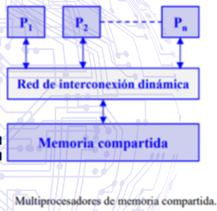
Estructura de los multiprocesadores de memoria compartida
La mayoría de los multiprocesadores comerciales son del tipo UMA (Uniform Memory Access): todos los procesadores tienen igual tiempo de acceso a la memoria compartida. En la arquitectura UMA los procesadores se conectan a la memoria a través de un bus, una red multietapa o un conmutador de barras cruzadas (red multietapa o un conmutador de barras cruzadas (crossbar crossbar) y disponen de su propia ) y disponen de su propia memoria caché.
Los procesadores tipo NUMA (Non Uniform Memory Access) presentan tiempos de acceso a la memoria compartida que dependen de la ubicación del elemento de proceso y la memoria.
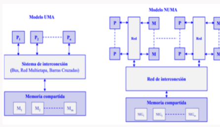
4.3.1 Redes de Interconexion dinamicas o indirectas
En el contexto de la arquitectura de computadoras, las redes de interconexión dinámicas o indirectas se refieren a los esquemas utilizados para conectar y comunicar los componentes de un sistema computacional, como procesadores, memoria y dispositivos de entrada/salida. Estas redes proporcionan una forma flexible y eficiente de transferir datos entre los distintos elementos del sistema.
Un ejemplo común de una red de interconexión dinámica en arquitectura de computadoras es el sistema de interconexión utilizado en los supercomputadores. Estos sistemas están diseñados para realizar tareas computacionalmente intensivas y requieren una alta capacidad de procesamiento y comunicación entre los nodos
En lugar de utilizar una arquitectura de bus tradicional, donde todos los componentes están conectados directamente a un único bus compartido, los supercomputadores suelen emplear arquitecturas de red más complejas. Estas arquitecturas utilizan enlaces de comunicación de alta velocidad, como redes toroidales, redes en malla o redes hipercúbicas, para interconectar los nodos de procesamiento y almacenamiento.
En una red de interconexión dinámica, los nodos pueden comunicarse indirectamente mediante saltos a través de otros nodos intermedios. Esto permite una comunicación eficiente y escalable en sistemas con un gran número de componentes. Además, estas redes suelen ser adaptables, lo que significa que pueden reconfigurarse dinámicamente para adaptarse a cambios en la carga de trabajo o a fallos en los nodos.
4.3.1.1 Redes de medio compartido
Es un tipo de arquitectura de red en la que múltiples dispositivos comparten un medio de comunicación común para enviar y recibir datos. En esta arquitectura, los dispositivos se conectan físicamente al mismo medio de transmisión, como un cable o una línea de transmisión, y deben coordinarse para acceder al medio y transmitir sus datos.
Un ejemplo común de una red de medio compartido en arquitectura de computadoras es Ethernet, que utiliza un cable compartido o un segmento de red para conectar múltiples dispositivos, como computadoras, servidores o impresoras. En Ethernet, los dispositivos utilizan un protocolo llamado CSMA/CD (Acceso Múltiple por Detección de Portadora con Detección de Colisiones) para gestionar el acceso al medio compartido.
En lugar de utilizar una arquitectura de bus tradicional, donde todos los componentes están conectados directamente a un único bus compartido, los supercomputadores suelen emplear arquitecturas de red más complejas. Estas arquitecturas utilizan enlaces de comunicación de alta velocidad, como redes toroidales, redes en malla o redes hipercúbicas, para interconectar los nodos de procesamiento y almacenamiento.
En una red de interconexión dinámica, los nodos pueden comunicarse indirectamente mediante saltos a través de otros nodos intermedios. Esto permite una comunicación eficiente y escalable en sistemas con un gran número de componentes. Además, estas redes suelen ser adaptables, lo que significa que pueden reconfigurarse dinámicamente para adaptarse a cambios en la carga de trabajo o a fallos en los nodos.
Es un tipo de arquitectura de red en la que múltiples dispositivos comparten un medio de comunicación común para enviar y recibir datos. En esta arquitectura, los dispositivos se conectan físicamente al mismo medio de transmisión, como un cable o una línea de transmisión, y deben coordinarse para acceder al medio y transmitir sus datos.
Un ejemplo común de una red de medio compartido en arquitectura de computadoras es Ethernet, que utiliza un cable compartido o un segmento de red para conectar múltiples dispositivos, como computadoras, servidores o impresoras. En Ethernet, los dispositivos utilizan un protocolo llamado CSMA/CD (Acceso Múltiple por Detección de Portadora con Detección de Colisiones) para gestionar el acceso al medio compartido.
Conexión por bus compartido.
Este tipo de red es más común en los computadores personales y servidores.
El bus consta de líneas de dirección, datos y control para implementar:
-El protocolo de transferencias de datos con la memoria.
-El arbitraje del acceso al bus cuando más de un procesador compite por utilizarlo.
Los procesadores utilizan cachés locales para:
-Reducir el tiempo medio de acceso a memoria, como en un monoprocesador.
-Disminuir la utilización del bus compartido.
Protocolo de transferencia de ciclo partido
La operación de lectura se divide en dos transacciones no continuas de acceso al bus. La primera es de petición de lectura que realiza el máster (procesador) sobre el slave (memoria). Una vez realizada la petición el máster abandona el bus. Cuando el slave dispone del dato leído, inicia un ciclo de bus actuando como máster para enviar el dato al antiguo máster, que ahora actúa como clave.
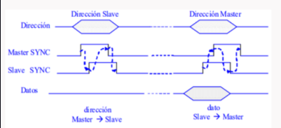
La responsabilidad del arbitraje se distribuye por los diferentes procesadores conectados al bus.
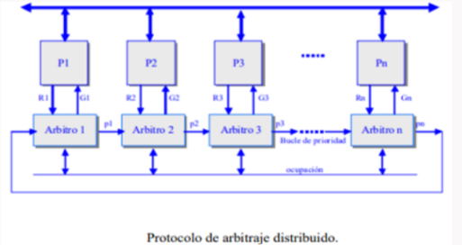
4.3.1.2 Redes Conmutadas
CONEXIÓN POR RED MULTIETAPA
- Representan una alternativa intermedia de conexión entre el bus y el crossbar.
- Es de menor complejidad que el crossbar pero mayor que el bus simple.
- La conectividad es mayor que la del bus simple pero menor que la del crossbar.
- Se compone de varias etapas alternativas de conmutadores simples y redes de interconexión.
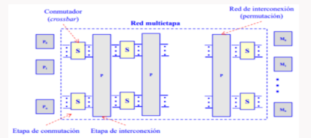
4.4 Sistemas de memoria distribuida: Multiprocesadores
Los sistemas de memoria distribuida o multicomputadores pueden ser de dos tipos básicos. El primer de ellos consta de un único computador con múltiples CPUs comunicadas por un bus de datos mientras que en el segundo se utilizan múltiples computadores, cada uno con su propio procesador, enlazados por una red de interconexión más o menos rápida.
Sobre los sistemas de multicomputadores de memoria distribuida, se simula memorias compartidas. Se usan los mecanismos de comunicación y sincronización de sistemas multiprocesadores.
Cada procesador tiene su propia memoria y la comunicación se realiza por intercambio explícito de mensajes a través de una red.
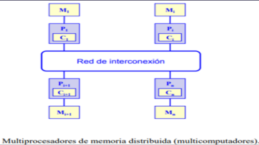
4.4.1 Red de interconexion estatica
Los multicomputadores utilizan redes estáticas con enlaces directos entre nodos. Cuando un nodo recibe un mensaje lo procesa si viene dirigido a dicho nodo. Si el mensaje no va dirigido al nodo receptor lo reenvía a otro por alguno de sus enlaces de salida siguiendo un protocolo de encaminamiento.
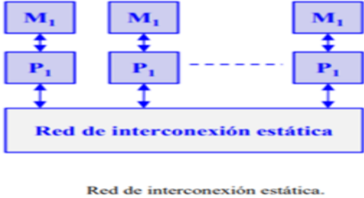
4.5 Casos de Estudio
Por numerosos motivos, el procesamiento distribuido se ha convertido en un área de gran importancia e interés dentro de la ciencia de la computación, produciendo profundas transformaciones en las líneas de investigación y desarrollo.
Interesa realizar investigación en la especificación, transformación, optimización y evaluación de algoritmos distribuidos y paralelos. Esto incluye el diseño y desarrollo de sistemas paralelos, la transformación de algoritmos secuenciales en paralelos, y las métricas de evaluación de performance sobre distintas plataformas de soporte (hardware y software). Más allá de las mejoras constantes en las arquitecturas físicas de soporte, uno de los mayores desafíos se centra en cómo aprovechar al máximo la potencia de las mismas.